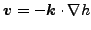
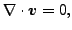
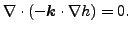
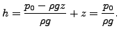
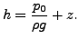

The governing equations of stationary groundwater flow are [27]
|  | (320) |
(also called Darcy's law) and
|  | (321) |
where
 is the discharge velocity,
is the discharge velocity,
 is the
permeability tensor and
is the
permeability tensor and  is the total head defined by
is the total head defined by
In the latter equation  is the groundwater pressure,
is the groundwater pressure,  is its density
and
is its density
and  is the height with respect to a reference level. The discharge
velocity is the quantity of fluid that flows through a unit of total area
of the porous medium in a unit of time.
is the height with respect to a reference level. The discharge
velocity is the quantity of fluid that flows through a unit of total area
of the porous medium in a unit of time.
The resulting equation now reads
|  | (323) |
Accordingly, by comparison with the heat equation, the correspondence in Table (15) arises. Notice that the groundwater flow equation is a steady state equation, and there is no equivalent to the heat capacity term.
Possible boundary conditions are:
|  | (324) |
|  | (325) |
| (326) |
In the direction
 perpendicular to the free surface
perpendicular to the free surface  must
be satisfied. However, the problem is that the exact location of the free
surface is not known. It has to be determined iteratively until both equations
are satisfied.
must
be satisfied. However, the problem is that the exact location of the free
surface is not known. It has to be determined iteratively until both equations
are satisfied.